Películas y series sin límites y mucho más Ready to watch? Enter your nombre de usuario to create or restart your membership. 👁️ Sign In
Ver película! Ver película! 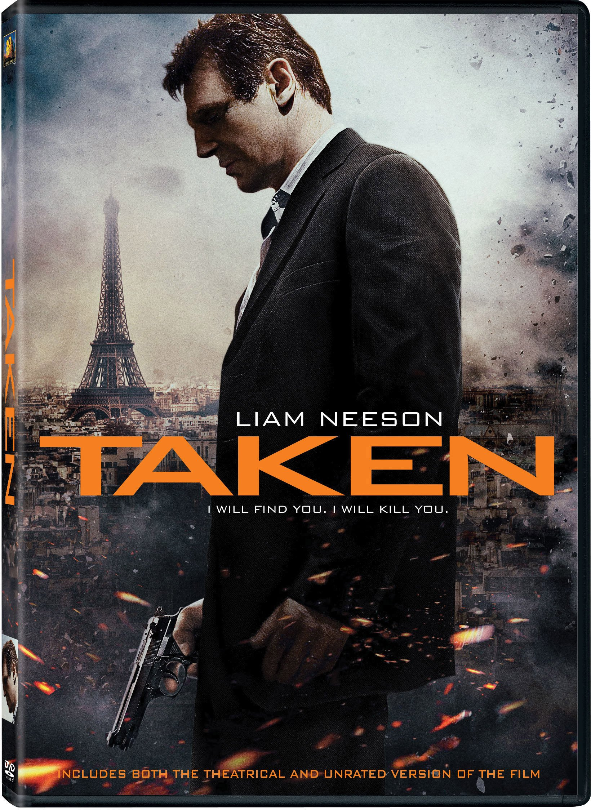 Ver película! Ver película! Ver película! Ver película! Ver película! Ver película! Ver película! Ver película! Ver película! Ver película! Ver película! Ver película! Ver película! Ver película! 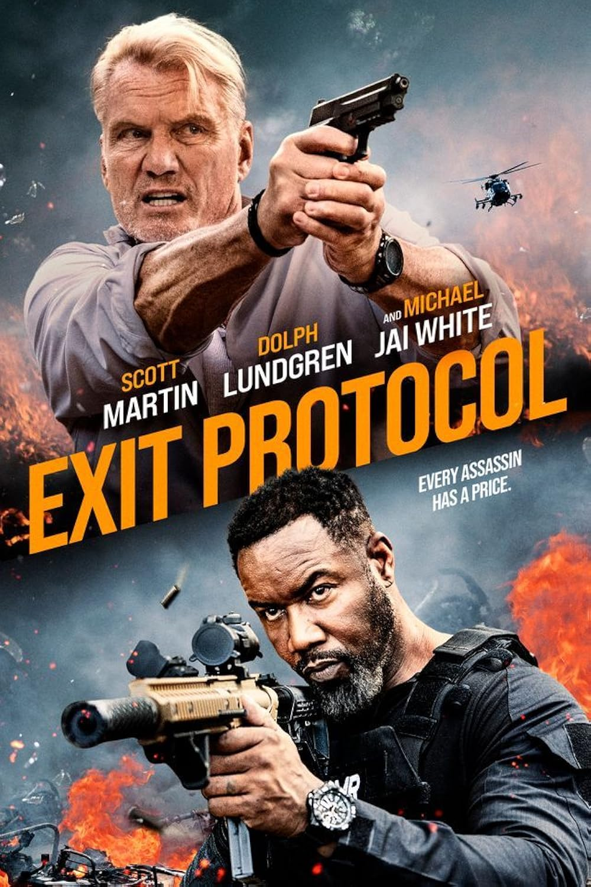 Ver película! 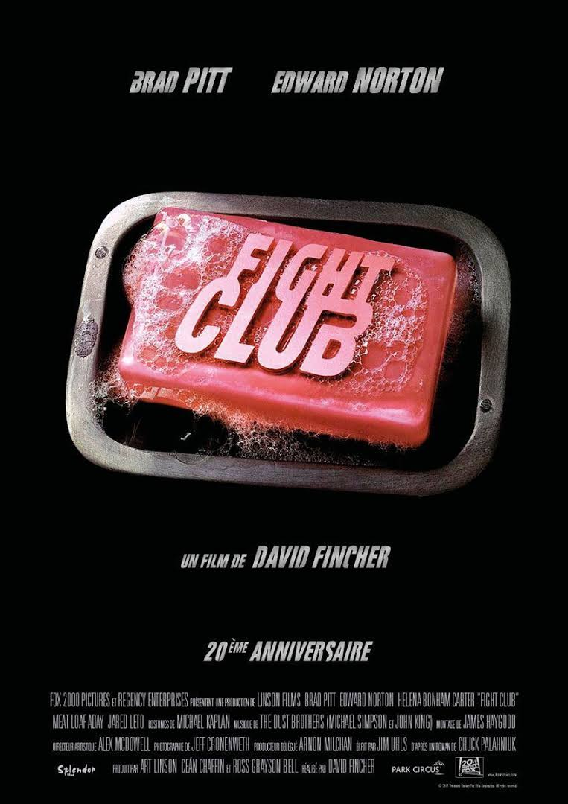 Ver película! Ver película! Ver película! Ver película! 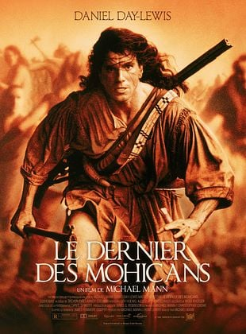 Ver película! Ver película! Ver película! X
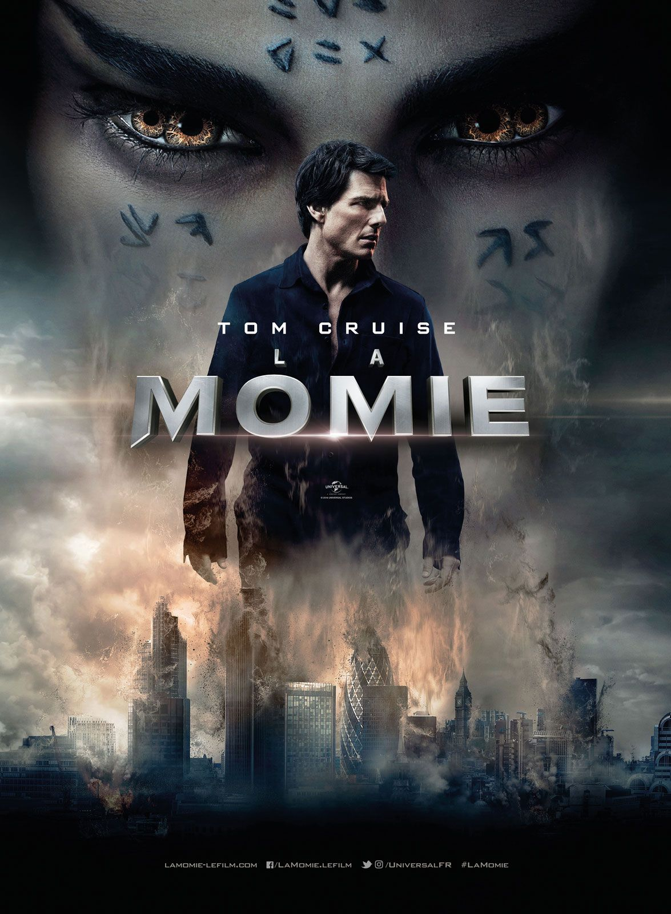 Ver película! Ver película! Ver película! Ver película! Ver película!an> Ver película! Ver película! Ver película! Ver película! Ver película! Ver película! Ver película! Ver película! Ver película! Ver película! Ver película! Ver película! Ver película! Ver película!> Ver película! 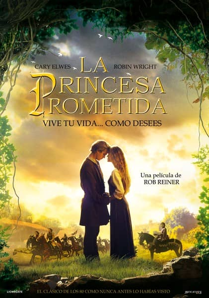 Ver película! Ver película! Ver película! Ver película! Ver película! Ver película! 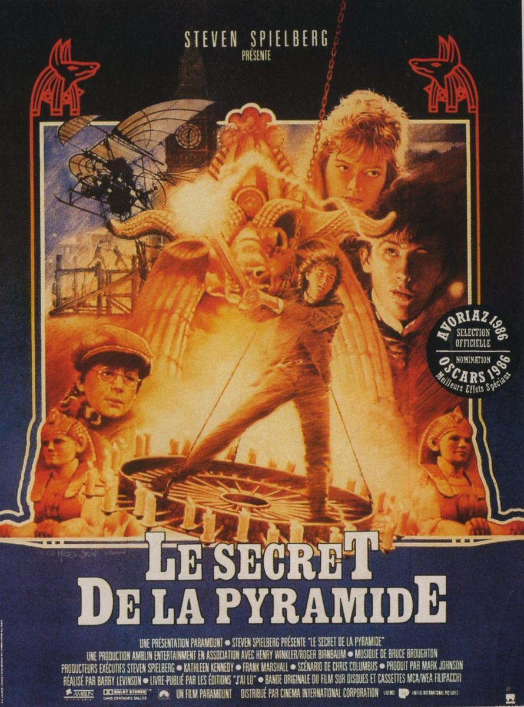 Ver película! X
Ver película! Ver película! Ver película! Ver película! Ver película! Ver película! Ver película! Ver película! 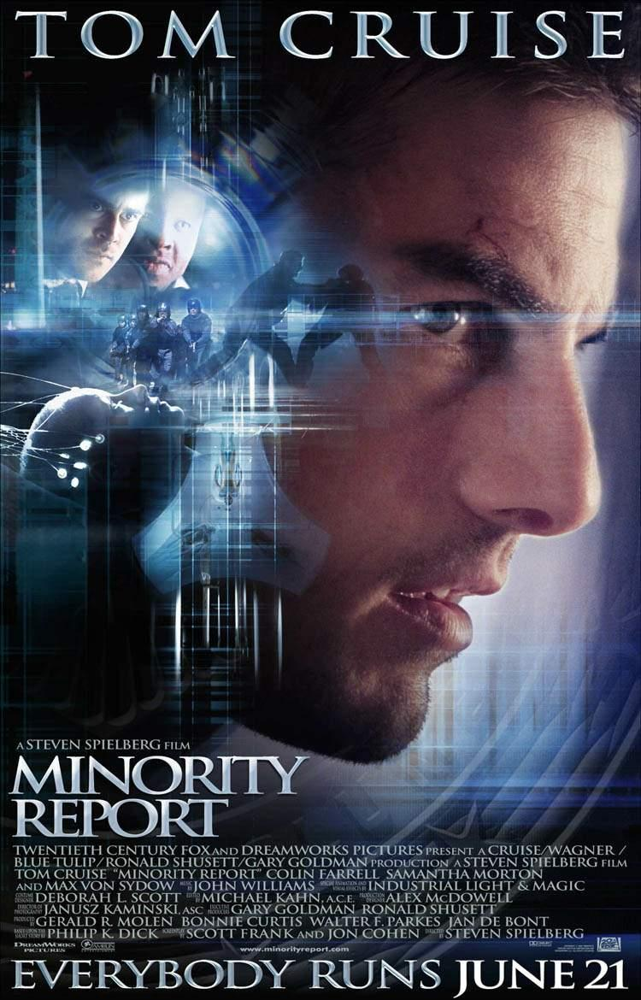 Ver película! 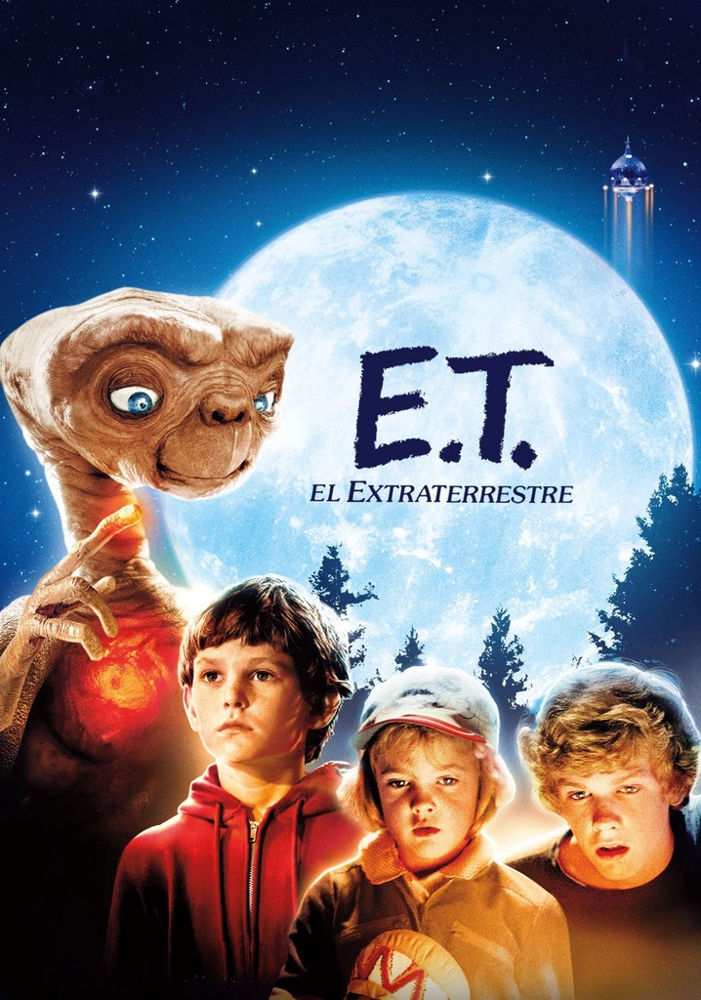 Ver película! Ver película! Ver película! Ver película! 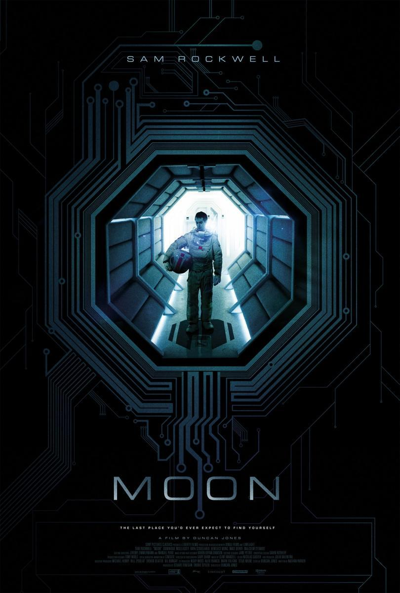 Ver película! Ver película! Ver película! 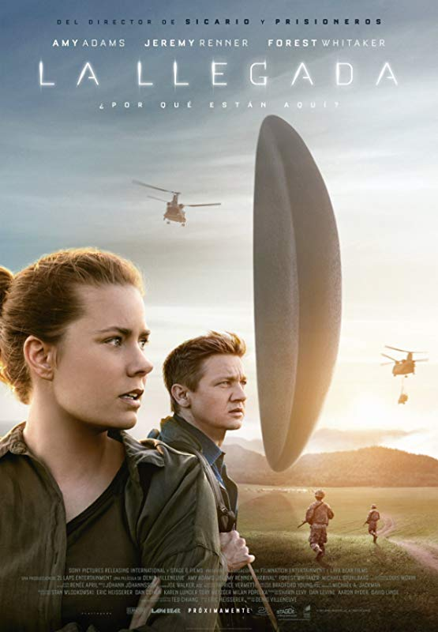 Ver película! Ver película! 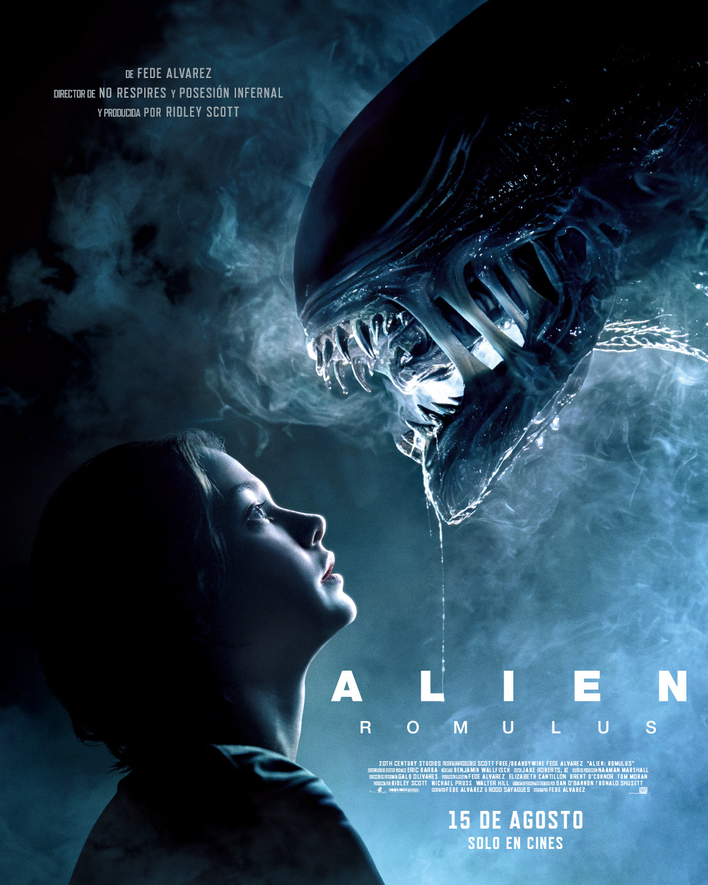 Ver película! Ver película! Ver película! Ver película! Ver película! Ver película! Ver película! 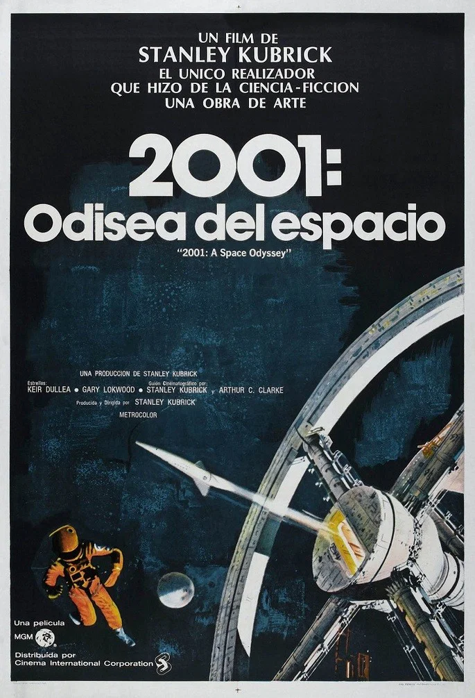 Ver película! X
Ver película! Ver película! Ver película! Ver película! Ver película! Ver película! Ver película! Ver película! Ver película! Ver película! Ver película! Ver película! Ver película! Ver película! Ver película! Ver película! Ver película! Ver película! Ver película! Ver película! X